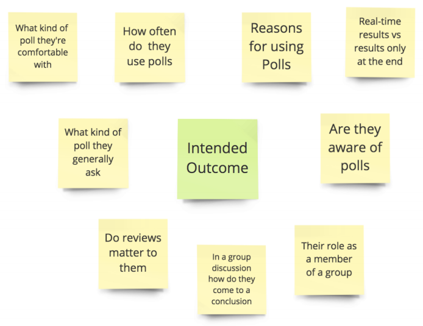
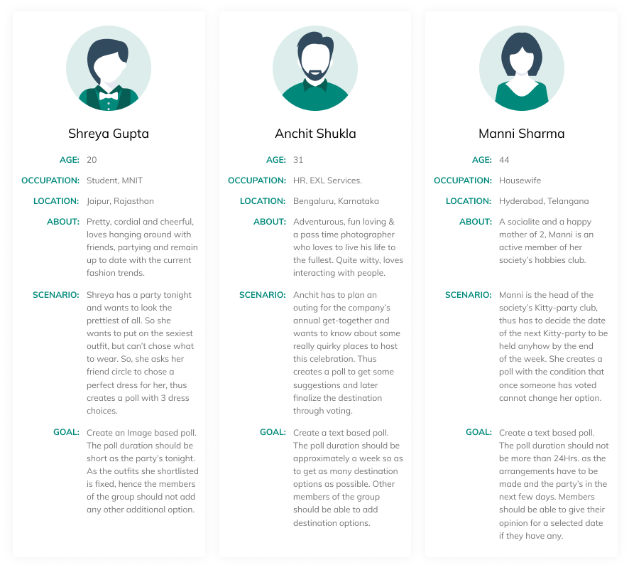
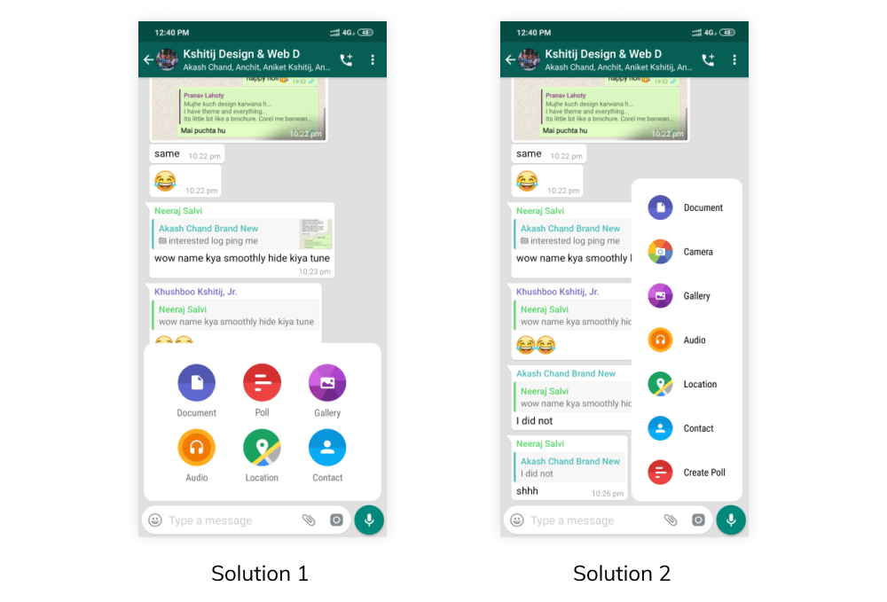
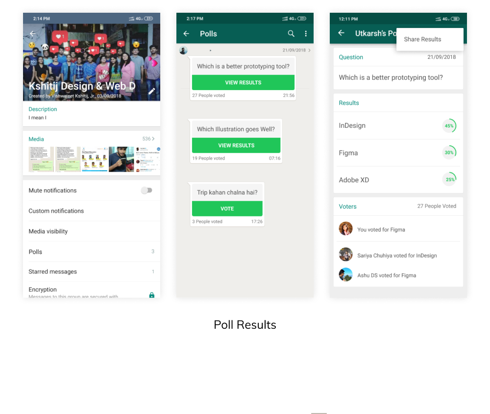

Assumptions
As the time frame of the challenge being really short, there were a number of assumptions I took :
- Out of different kinds of groups that prevail, Informal chats are the ones which are in dominance. People rarely use WhatsApp for Official purpose.
- The WhatsApp feature “Payment” hasn’t been introduced yet, and the “Camera” feature is still present in “Add Media”.
- As mentioned in the problem statement, I being a part of the design team of WhatsApp have a say in addition/subtraction of elements as and when required.
- Decisions made are in accordance with the Indian Janta.
Initially to find a point to start, I started with writing down random thoughts and questions that came in my mind related to Polls. A few of them were:
- Why do we need polls?
- Who’s going to use it?
- Which all applications have existing polls feature?
- Is it going to be a text based poll or image based?
- How frequently is it going to be used?
- Should the results be shown to all or just the poll creator?
- Is the Admin involvement required?
- Real-time results or the results after the voting is done?
- How do we create Polls?
To start of with, I planned to learn about the existing polls in other competitive applications. Understanding their methodology and presentation might lead me towards the solution. So, Facebook, Instagram, Messenger & Inshorts were the 4 main applications, whose Polls service I analyzed.
Understanding the Target Audience
So I divided the user base into two demographic categories, considering the fact that people now a days are psychographically quite familiar with messaging apps:
- People who are technologically well versed, i.e. students, entrepreneurs & corporates.
- People who aren’t much comfortable with new technology and take time to become familiar with the new tech.
Then I went on to find out, what the polls are going to be. Who will be putting up posts, why will he/she use WhatsApp to put up a poll, and why specifically polls in groups? So I decided to talk to a few colleagues who extensively used social media applications to get a better understanding of use cases.
I do not believe in asking direct questions while discussing a problem, so I quickly wrote down a few points that I need to consider while talking to people.

Pain Points & Their Solutions
From the six 1:1 Interviews I took, I finally narrowed down to the following pain points, and suggested solutions of how to tackle them:
- “WhatsApp is more of a messaging app and gives not much social experience”
SOLUTION: Just keeping text-based polls won’t help, we’ve to also provide them with the option of Image-based poll so as to improve their experience.
- “Once a poll is created, due to consecutive messages, the poll gets ignored”
SOLUTION: A new feature - a Quarter circle could be introduced on the top right corner (which is barely used, this won’t distract), which will be fixed and will be active till the Poll is active. On clicking this pin, it would redirect to the poll in the chat.
- “In some Polls the number of people who’ve already voted the given options is visible, thus my decision is biased sometimes”
SOLUTION: The Poll results are to be kept hidden until the user has voted a particular option.
- “Instagram polls are really nice, but WhatsApp has a clean UI style of its own”
SOLUTION: Designing on the ground with the prescribed UI Pattern of WhatsApp, it’ll better not to provide the kind of polls that Instagram provides, we’ll keep it simple and clean.
- “Is poll in a group chat really important? It shouldn’t have a totally different functionality of its own”
SOLUTION: Polls can be Introduced in place of “Camera” in attachment because the “camera” feature is already present alongside the text input bar.
- “Sometimes I need a poll only for a couple of hours, hope the duration was flexible and not fixed as of Instagram”
SOLUTION: Polls would be given equal priority as of sending a location or a contact, and the functionality will be almost the same. While creating a poll the Time Duration can be varied.
On observing it was found out that, WhatsApp has tried to incorporate everything in messages. Let it be an Image, a Video, a Contact or even a location, everything is sent in the form of a message. So I came to the conclusion that the Poll to be created should also be sent as a message and not to be kept as a feature with totally different functionality. Plus the usability of Polls increase if it is sent as a message, people can reply to it, thus can provide contextual suggestions to the poll.
Personas
From Interviews, I got a better understanding of what use cases can be. Thus coming up with the following Personas and user flows:

How To Create A New Poll
Solution 1:
I observed that the “Add Image from Camera” feature is there twice in the present application. WhatsApp had very wisely maintained the symmetry in icons in “Add Media” as well as keeping it up front as an option for easy access. So I replaced “Camera” in “Add Media” with “Poll”.
Solution 2:
Later I thought to keep the camera feature intact so that no existing feature is disturbed while I’m redesigning so as to keep add Poll as a feature.
Out of the Solutions, I finally proceeded with Solution 1, as I thought it was practical enough and the omission of one of the “camera” feature won’t be a major concern. Plus the fact that I earlier assumed that, I being a part of the Design Team of WhatsApp have the right to make major changes.

Casting Of Votes
As discussed earlier, the Poll created will come as a message. So it is quite obvious that after a few messages the poll card will go unnoticed, and a majority of the members of the group won’t be able to respond. Thus a marker or an additional feature needed to be added to the existing application so that the members get to know that a Poll is live. This way, the conversion rate can be increased multiple times.
So, as time was less and I wanted to come up with something disruptive, I introduced a new element which was upfront and on clicking would directly take you to the Poll. I’ve done descriptive research on the new element I introduced, you can read about it in my other project:
Parallel Chat - Concept Design.
Once you reach the Poll card, you need to first choose your option and then on submitting you get to know about the cumulative result. The reason for not showing the result recorded until then, as seen in Messenger and Facebook, was to keep the poll completely unbiased. Through user research, I got to know that people found Insta Polls more intriguing and amusing as compared to Facebook pools, cause they had this eagerness to know I they were on the winning side or not. So basically a touch of gamification was what people liked more.
Situations might arise where people might select the wrong option by mistake or might want to change their decision, so as discussed, it’s in the hand of the poll creator to decide if the user can edit his/her pole one submitted.
The results of the poll was that of a particular group, so it was quite obvious to add it in the Group Profile, but where?
I had two option, either add it under “Media”, alongside Media, Documents, and Links or as a completely independent entity, such as Starred Message, Media Visibility etc. Logically it should come under Media as initially while creating a poll, it was “Add Media” we clicked first to reach polls, but considering the fact that sharing Location and Contact history didn’t turn up in “Media”, I decided to keep it as a different entity altogether. The decision was quite ambiguous, but with time flying by, I had to decide anyhow.
The Poll Results can be later shared once the poll has been completed as an Image. Sharing option can be accessed through the more option in the top right corner.
